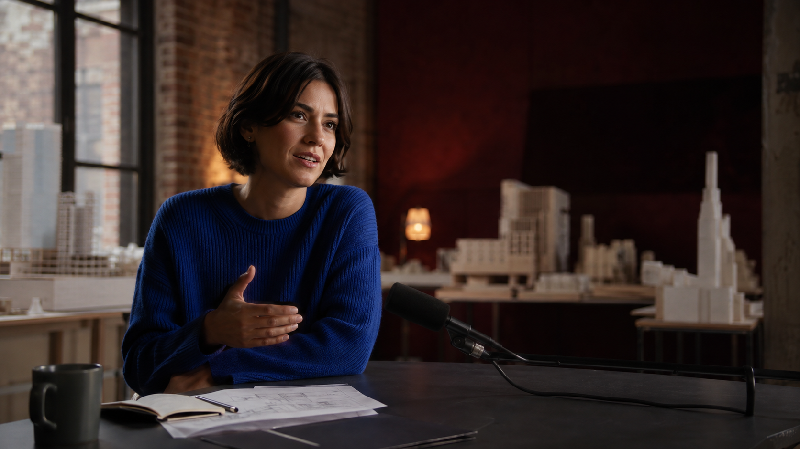

FORM & FEEL/September collection

AOriginal master 52:14
04 · Room for people
v3
Platform safe area
SOURCE A · 19:27 — 31:51
Good spaces leave room
for people.
for people.
26:12/ 52:14
Your edit, with the whole story behind it.
EPISODE CANVAS
One source. A whole collection.
Drag a node to arrange · Drag the background to pan
100%
THE WHOLE EPISODE6 chapters · 1 deliberate drop